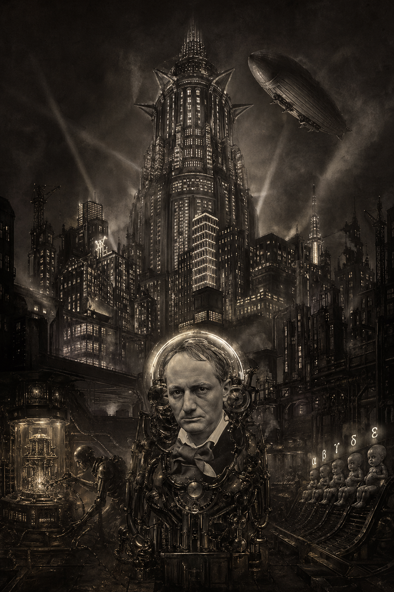

"En tout cas, rien des apparences actuelles" - Rimbaud
'Yes I'm lonely, wanna die' と口ずさんでいる。扨て、彼の悩みとは一体なんだろう。
†
「近頃の僕の生活。朝から晩まで数式捻り、錬金術染みた晦渋極まる書物とにらめっこ。
しかし家に帰ればリール三昧、陰謀論を蒐集し、《やはり宇宙は存在しない、か。》とつぶやく。
奇妙な二重生活者ージキルとハイド、、」
几帳面に書きつけてる『手帖』の断面である。
†
彼はある日、量子論の講座で課された宿題としてこんなものを提出した。
なるほど、大問①は光電効果およびシュテルン・ゲルラッハ実験の説明だ。
そして、大問②では量子計算機に関する最新記事の紹介。いずれも勤勉な理系大学生を窺わせる、
丁寧な調子で書かれている。
おやおや、大問③のこの回答は？
†
[問題文]
我々は、量子技術のめざましい発展を目の当たりにしていて、いわば歴史の展開に立ち会っている訳である。
さて、30年後の世の中は一体どうなっているか、想像して書きなさい。
†
[解答]
"En tout cas, rien des apparences actuelles" - Rimbaud
30年後ー大体2060年頃、僕がまだ生きていれば50歳ぐらいになっている。量子コンピュータ、AGI
は既に実現しているだろうか。今のスピードで行けば、全く夢どころではなく、かなりの現実味と質量を持って、
そうした未来が迫ってきている気がする。
技術そのものより、国家/政府、一般大衆といった既存の社会の構造と
どのように結びつき、揺るがすことなってしまうかに就いて想像がはたらく。無限の計算能力、知能を持った
「量子マシン」ー『月は無慈悲な夜の女王』に登場する 'Mike' を思い出す。小説では主人公がコンピュータ
と協力して政府を倒したが、おそらく現実に於いては、既にエリートのポジションについている一部の人間
(技術にアクセス出来る人達) が真っ先に使い始めて、結局、政府が今の立場をますます堅固なものにしていく
ことにつながるのではないか、と危惧する。
そうなれば、一般の大衆は、社会そのものでありながら、
社会という巨大な機構が正常に作動する様にメンテナンスする労働者、道具( = 置換的末端歯車)と化してしまうかもしれない。
近年加速しているトランスヒューマニズムの思想の一環として、ある労働者の腕は、彼の職業に最適化された
ロボットアームに置換されるだろう。(やはり、先ほどの『女王』の主人公みたいに)
1927年の映画《Metropolis》や Aldous Huxley 《Brave New World》に向かっているとしたら恐ろしい。
《Brave New World》に於いては、一部のエリート家系以外のあらゆる人間は、生まれた時点で将来の職業・階級
が決まっており、上から順にα、β、γ、δ、εとラベルが付けられている。ヒトはもはや生まれるのではなく、
工場から出荷されるのだ。体格・IQなどの諸パラメータは遺伝子操作で、階級ごとに調整されている。
(だから、私が所属しているZ世代の次が 'gen α'、'gen β'、...と名付けられていることはやや不気味である)
《すばらしい新世界》の住民は、少しでも気分が悪くなれば直ちに 'Soma' という快楽ドラッグを服用して、
憂鬱を瞬時に吹き飛ばす。
紙面が足りない上に、余りにも脱線してしまったので終わりにする。 ⬜︎
†
もう、世紀末という感じである。「気分はもう戦争」‼️
社会という巨大な微分演算装置を不可逆的に、しかも不本意のまま通過し、
消耗しきった精神が残したもぬけの殻、といった処か。
おお、憐れな同胞よ、我が兄弟よ！
†
《量子陰謀学序説》では、彼の '勉強' の成果とでもいうべき諸断片を羅列していく。
毎週の日曜日、週一連載である、ぜひ期待してくれたまえ。
毎週の日曜日、週一連載である、ぜひ期待してくれたまえ。
†
"En tout cas, rien des apparences actuelles" - Rimbaud
「だが、これからお前には仕事があるのだ。
〜
お前の記憶と感覺とは、正しくお前の創造する衝動の糧となるだろう。
扨て、この世は、お前の去った後、どうなってしまうのか。
いずれにしても、何一つとして、今ある姿ではないだろう。」